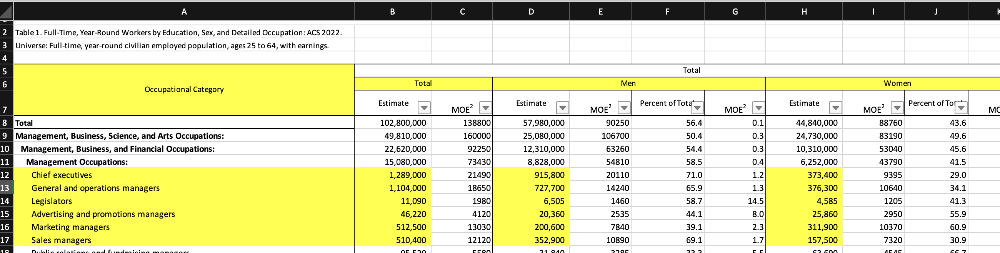
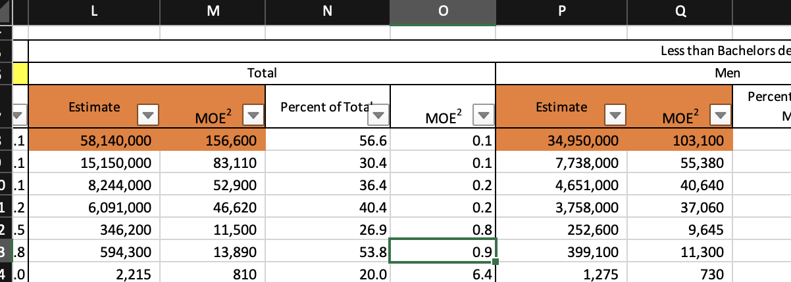

xlsxFile <- system.file("extdata", "openxlsx2_example.xlsx", package = "openxlsx2")3 Reading to data frames
3.1 Importing data
Coming from openxlsx you might know about read.xlsx() (two functions, one for files and one for workbooks) and readWorkbook(). Functions that do different things, but mostly the same. In openxlsx2 we tried our best to reduce the complexity under the hood and for the user as well. In openxlsx2 they are replaced with read_xlsx(), wb_read() and they share the same underlying function wb_to_df().
For this example we will use example data provided by the package. You can locate it in our “inst/extdata” folder. The files are included with the package source and you can open them in any calculation software as well.
3.1.1 Basic import
We begin with the openxlsx2_example.xlsx file by telling R where to find this file on our system
The object contains a path to the xlsx file and we pass this file to our function to read the workbook into R
# import workbook
wb_to_df(xlsxFile)
#> Var1 Var2 <NA> Var3 Var4 Var5 Var6 Var7 Var8
#> 3 TRUE 1 NA 1 a 2023-05-29 3209324 This #DIV/0! 01:27:15
#> 4 TRUE NA NA #NUM! b 2023-05-23 <NA> 0 14:02:57
#> 5 TRUE 2 NA 1.34 c 2023-02-01 <NA> #VALUE! 23:01:02
#> 6 FALSE 2 NA <NA> #NUM! <NA> <NA> 2 17:24:53
#> 7 FALSE 3 NA 1.56 e <NA> <NA> <NA> <NA>
#> 8 FALSE 1 NA 1.7 f 2023-03-02 <NA> 2.7 08:45:58
#> 9 NA NA NA <NA> <NA> <NA> <NA> <NA> <NA>
#> 10 FALSE 2 NA 23 h 2023-12-24 <NA> 25 <NA>
#> 11 FALSE 3 NA 67.3 i 2023-12-25 <NA> 3 <NA>
#> 12 NA 1 NA 123 <NA> 2023-07-31 <NA> 122 <NA>The output is created as a data frame and contains data types date, logical, numeric and character. The function to import the file to R, wb_to_df() provides similar options as the openxlsx functions read.xlsx() and readWorkbook() and a few new functions we will go through the options. As you might have noticed, we return the column of the xlsx file as the row name of the data frame returned. Per default the first sheet in the workbook is imported. If you want to switch this, either provide the sheet parameter with the correct index or provide the sheet name.
3.1.2 col_names - first row as column name
In the previous example the first imported row was used as column name for the data frame. This is the default behavior, but not always wanted or expected. Therefore this behavior can be disabled by the user.
# do not convert first row to column names
wb_to_df(xlsxFile, col_names = FALSE)
#> B C D E F G H I J
#> 2 Var1 Var2 NA Var3 Var4 Var5 Var6 Var7 Var8
#> 3 TRUE 1 NA 1 a 2023-05-29 3209324 This #DIV/0! 01:27:15
#> 4 TRUE <NA> NA #NUM! b 2023-05-23 <NA> 0 14:02:57
#> 5 TRUE 2 NA 1.34 c 2023-02-01 <NA> #VALUE! 23:01:02
#> 6 FALSE 2 NA <NA> #NUM! <NA> <NA> 2 17:24:53
#> 7 FALSE 3 NA 1.56 e <NA> <NA> <NA> <NA>
#> 8 FALSE 1 NA 1.7 f 2023-03-02 <NA> 2.7 08:45:58
#> 9 <NA> <NA> NA <NA> <NA> <NA> <NA> <NA> <NA>
#> 10 FALSE 2 NA 23 h 2023-12-24 <NA> 25 <NA>
#> 11 FALSE 3 NA 67.3 i 2023-12-25 <NA> 3 <NA>
#> 12 <NA> 1 NA 123 <NA> 2023-07-31 <NA> 122 <NA>
3.1.3 detect_dates - convert cells to R dates
The creators of the openxml standard are well known for mistakenly treating something as a date and openxlsx2 has built in ways to identify a cell as a date and will try to convert the value for you, but unfortunately this is not always a trivial task and might fail. In such a case we provide an option to disable the date conversion entirely. In this case the underlying numerical value will be returned.
# do not try to identify dates in the data
wb_to_df(xlsxFile, detect_dates = FALSE)
#> Var1 Var2 <NA> Var3 Var4 Var5 Var6 Var7 Var8
#> 3 TRUE 1 NA 1 a 45075 3209324 This #DIV/0! 0.06059028
#> 4 TRUE NA NA #NUM! b 45069 <NA> 0 0.58538194
#> 5 TRUE 2 NA 1.34 c 44958 <NA> #VALUE! 0.95905093
#> 6 FALSE 2 NA <NA> #NUM! NA <NA> 2 0.72561343
#> 7 FALSE 3 NA 1.56 e NA <NA> <NA> NA
#> 8 FALSE 1 NA 1.7 f 44987 <NA> 2.7 0.36525463
#> 9 NA NA NA <NA> <NA> NA <NA> <NA> NA
#> 10 FALSE 2 NA 23 h 45284 <NA> 25 NA
#> 11 FALSE 3 NA 67.3 i 45285 <NA> 3 NA
#> 12 NA 1 NA 123 <NA> 45138 <NA> 122 NA
3.1.4 show_formula - show formulas instead of results
Sometimes things might feel off. This can be because the openxml files are not updating formula results in the sheets unless they are opened in software that provides such functionality as certain tabular calculation software. Therefore the user might be interested in the underlying functions to see what is going on in the sheet. Using show_formula this is possible
# return the underlying Excel formula instead of their values
wb_to_df(xlsxFile, show_formula = TRUE)
#> Var1 Var2 <NA> Var3 Var4 Var5 Var6 Var7 Var8
#> 3 TRUE 1 NA 1 a 2023-05-29 3209324 This E3/0 01:27:15
#> 4 TRUE NA NA #NUM! b 2023-05-23 <NA> C4 14:02:57
#> 5 TRUE 2 NA 1.34 c 2023-02-01 <NA> #VALUE! 23:01:02
#> 6 FALSE 2 NA <NA> #NUM! <NA> <NA> C6+E6 17:24:53
#> 7 FALSE 3 NA 1.56 e <NA> <NA> <NA> <NA>
#> 8 FALSE 1 NA 1.7 f 2023-03-02 <NA> C8+E8 08:45:58
#> 9 NA NA NA <NA> <NA> <NA> <NA> <NA> <NA>
#> 10 FALSE 2 NA 23 h 2023-12-24 <NA> SUM(C10,E10) <NA>
#> 11 FALSE 3 NA 67.3 i 2023-12-25 <NA> PRODUCT(C11,E3) <NA>
#> 12 NA 1 NA 123 <NA> 2023-07-31 <NA> E12-C12 <NA>
3.1.5 dims - read specific dimension
Sometimes the entire worksheet contains to much data, in such case we provide functions to read only a selected dimension range. Such a range consists of either a specific cell like “A1” or a cell range in the notion used in the openxml standard
# read dimension without column names
wb_to_df(xlsxFile, dims = "A2:C5", col_names = FALSE)
#> A B C
#> 2 NA Var1 Var2
#> 3 NA TRUE 1
#> 4 NA TRUE <NA>
#> 5 NA TRUE 2Alternatively, if you don’t know the Excel sheet’s address, you can use wb_dims() to specify the dimension. See below or in?wb_dims for more details.
# read dimension without column names with `wb_dims()`
wb_to_df(xlsxFile, dims = wb_dims(rows = 2:5, cols = 1:3), col_names = FALSE)
#> A B C
#> 2 NA Var1 Var2
#> 3 NA TRUE 1
#> 4 NA TRUE <NA>
#> 5 NA TRUE 2
3.1.6 cols - read selected columns
If you do not want to read a specific cell, but a cell range you can use the column attribute. This attribute takes a numeric vector as argument
# read selected cols
wb_to_df(xlsxFile, cols = c("A:B", "G"))
#> <NA> Var1 Var5
#> 3 NA TRUE 2023-05-29
#> 4 NA TRUE 2023-05-23
#> 5 NA TRUE 2023-02-01
#> 6 NA FALSE <NA>
#> 7 NA FALSE <NA>
#> 8 NA FALSE 2023-03-02
#> 9 NA NA <NA>
#> 10 NA FALSE 2023-12-24
#> 11 NA FALSE 2023-12-25
#> 12 NA NA 2023-07-31
3.1.7 rows - read selected rows
The same goes with rows. You can select them using numeric vectors
# read selected rows
wb_to_df(xlsxFile, rows = c(2, 4, 6))
#> Var1 Var2 <NA> Var3 Var4 Var5 Var6 Var7 Var8
#> 4 TRUE NA NA #NUM! b 2023-05-23 NA 0 14:02:57
#> 6 FALSE 2 NA <NA> #NUM! <NA> NA 2 17:24:53
3.1.8 convert - convert input to guessed type
In xml exists no difference between value types. All values are per default characters. To provide these as numerics, logicals or dates, openxlsx2 and every other software dealing with xlsx files has to make assumptions about the cell type. This is especially tricky due to the notion of worksheets. Unlike in a data frame, a worksheet can have a wild mix of all types of data. Even though the conversion process from character to date or numeric is rather solid, sometimes the user might want to see the data without any conversion applied. This might be useful in cases where something unexpected happened or the import created warnings. In such a case you can look at the raw input data. If you want to disable date detection as well, please see the entry above.
# convert characters to numerics and date (logical too?)
wb_to_df(xlsxFile, convert = FALSE)
#> Var1 Var2 <NA> Var3 Var4 Var5 Var6 Var7 Var8
#> 3 TRUE 1 <NA> 1 a 2023-05-29 3209324 This #DIV/0! 01:27:15
#> 4 TRUE <NA> <NA> #NUM! b 2023-05-23 <NA> 0 14:02:57
#> 5 TRUE 2 <NA> 1.34 c 2023-02-01 <NA> #VALUE! 23:01:02
#> 6 FALSE 2 <NA> <NA> #NUM! <NA> <NA> 2 17:24:53
#> 7 FALSE 3 <NA> 1.56 e <NA> <NA> <NA> <NA>
#> 8 FALSE 1 <NA> 1.7 f 2023-03-02 <NA> 2.7 08:45:58
#> 9 <NA> <NA> <NA> <NA> <NA> <NA> <NA> <NA> <NA>
#> 10 FALSE 2 <NA> 23 h 2023-12-24 <NA> 25 <NA>
#> 11 FALSE 3 <NA> 67.3 i 2023-12-25 <NA> 3 <NA>
#> 12 <NA> 1 <NA> 123 <NA> 2023-07-31 <NA> 122 <NA>
3.1.9 skip_empty_rows - remove empty rows
Even though openxlsx2 imports everything as requested, sometimes it might be helpful to remove empty lines from the data. These might be either left empty intentional or empty because they are were formatted, but the cell value was removed afterwards. This was added mostly for backward comparability, but the default has been changed to FALSE. The behavior has changed a bit as well. Previously empty cells were removed prior to the conversion to R data frames, now they are removed after the conversion and are removed only if they are completely empty
# erase empty rows from dataset
wb_to_df(xlsxFile, sheet = 1, skip_empty_rows = TRUE) |> tail()
#> Var1 Var2 <NA> Var3 Var4 Var5 Var6 Var7 Var8
#> 6 FALSE 2 NA <NA> #NUM! <NA> <NA> 2 17:24:53
#> 7 FALSE 3 NA 1.56 e <NA> <NA> <NA> <NA>
#> 8 FALSE 1 NA 1.7 f 2023-03-02 <NA> 2.7 08:45:58
#> 10 FALSE 2 NA 23 h 2023-12-24 <NA> 25 <NA>
#> 11 FALSE 3 NA 67.3 i 2023-12-25 <NA> 3 <NA>
#> 12 NA 1 NA 123 <NA> 2023-07-31 <NA> 122 <NA>
3.1.10 skip_empty_cols - remove empty columns
The same for columns
# erase empty columns from dataset
wb_to_df(xlsxFile, skip_empty_cols = TRUE)
#> Var1 Var2 Var3 Var4 Var5 Var6 Var7 Var8
#> 3 TRUE 1 1 a 2023-05-29 3209324 This #DIV/0! 01:27:15
#> 4 TRUE NA #NUM! b 2023-05-23 <NA> 0 14:02:57
#> 5 TRUE 2 1.34 c 2023-02-01 <NA> #VALUE! 23:01:02
#> 6 FALSE 2 <NA> #NUM! <NA> <NA> 2 17:24:53
#> 7 FALSE 3 1.56 e <NA> <NA> <NA> <NA>
#> 8 FALSE 1 1.7 f 2023-03-02 <NA> 2.7 08:45:58
#> 9 NA NA <NA> <NA> <NA> <NA> <NA> <NA>
#> 10 FALSE 2 23 h 2023-12-24 <NA> 25 <NA>
#> 11 FALSE 3 67.3 i 2023-12-25 <NA> 3 <NA>
#> 12 NA 1 123 <NA> 2023-07-31 <NA> 122 <NA>
3.1.11 row_names - keep rownames from input
Sometimes the data source might provide rownames as well. In such a case you can openxlsx2 to treat the first column as rowname
# convert first row to rownames
wb_to_df(xlsxFile, sheet = 2, dims = "C6:G9", row_names = TRUE)
#> mpg cyl disp hp
#> Mazda RX4 21.0 6 160 110
#> Mazda RX4 Wag 21.0 6 160 110
#> Datsun 710 22.8 4 108 93
3.1.12 types - convert column to specific type
If the user know better than the software what type to expect in a worksheet, this can be provided via types. This parameter takes a named numeric. 0 is character, 1 is numeric and 2 is date
3.1.13 start_row - where to begin
Often the creator of the worksheet has used a lot of creativity and the data does not begin in the first row, instead it begins somewhere else. To define the row where to begin reading, define it via the start_row parameter
# start in row 5
wb_to_df(xlsxFile, start_row = 5, col_names = FALSE)
#> B C D E F G H I J
#> 5 TRUE 2 NA 1.34 c 2023-02-01 NA #VALUE! 23:01:02
#> 6 FALSE 2 NA NA #NUM! <NA> NA 2 17:24:53
#> 7 FALSE 3 NA 1.56 e <NA> NA <NA> <NA>
#> 8 FALSE 1 NA 1.70 f 2023-03-02 NA 2.7 08:45:58
#> 9 NA NA NA NA <NA> <NA> NA <NA> <NA>
#> 10 FALSE 2 NA 23.00 h 2023-12-24 NA 25 <NA>
#> 11 FALSE 3 NA 67.30 i 2023-12-25 NA 3 <NA>
#> 12 NA 1 NA 123.00 <NA> 2023-07-31 NA 122 <NA>
3.1.14 na.strings - define missing values
There is the “#N/A” string, but often the user will be faced with custom missing values and other values we are not interested. Such strings can be passed as character vector via na.strings
# na strings
wb_to_df(xlsxFile, na.strings = "")
#> Var1 Var2 <NA> Var3 Var4 Var5 Var6 Var7 Var8
#> 3 TRUE 1 NA 1 a 2023-05-29 3209324 This #DIV/0! 01:27:15
#> 4 TRUE NA NA #NUM! b 2023-05-23 <NA> 0 14:02:57
#> 5 TRUE 2 NA 1.34 c 2023-02-01 <NA> #VALUE! 23:01:02
#> 6 FALSE 2 NA <NA> #NUM! <NA> <NA> 2 17:24:53
#> 7 FALSE 3 NA 1.56 e <NA> <NA> <NA> <NA>
#> 8 FALSE 1 NA 1.7 f 2023-03-02 <NA> 2.7 08:45:58
#> 9 NA NA NA <NA> <NA> <NA> <NA> <NA> <NA>
#> 10 FALSE 2 NA 23 h 2023-12-24 <NA> 25 <NA>
#> 11 FALSE 3 NA 67.3 i 2023-12-25 <NA> 3 <NA>
#> 12 NA 1 NA 123 <NA> 2023-07-31 <NA> 122 <NA>3.1.15 Importing as workbook
In addition to importing directly from xlsx or xlsm files, openxlsx2 provides the wbWorkbook class used for importing and modifying entire the openxml files in R. This workbook class is the heart of openxlsx2 and probably the reason why you are reading this manual in the first place.
Importing a file into a workbook looks like this:
# the file we are going to load
xlsxFile <- system.file("extdata", "openxlsx2_example.xlsx", package = "openxlsx2")
# loading the file into the workbook
wb <- wb_load(file = xlsxFile)The additional options wb_load() provides are for internal use: sheet loads only a selected sheet from the workbook and data_only reads only the data parts from a workbook and ignores any additional graphics or pivot tables. Both functions create workbook objects that can only be used to read data, and we do not recommend end users to use them. Especially not if they intend to re-export the workbook afterwards.
Once a workbook is imported, we provide several functions to interact with and modify it (the wb_to_df() function mentioned above works the same way for an imported workbook). It is possible to add new sheets and remove sheets, as well as to add or remove data. R-plots can be inserted and also the style of the workbook can be changed, new fonts, background colors and number formats. There is a wealth of options explained in the man pages and the additional style vignette (more vignettes to follow).
3.2 Example: Reading real world data
In the lines above we have seen various ways how to read data. There is just one downside, actual real world data is usually not as nice and simple as the data we have seen above. Real world data has often features that help us humans to understand and interpret tables, like headlines that span across multiple rows and columns, or descriptions before the data, and footnotes after the data. In addition it is often mixed with totals and subtotals, so even if the data is imported, it still requires a lot of data cleaning. There are ways how openxlsx2 can help in this regard. And while not necessarily required, actually looking at the data in a spreadsheet software can help with its understanding.
The file we use is part of the publications from the US Census. “Table 1. Full-Time, Year-Round Workers by Education, Sex, and Detailed Occupation: ACS 2022.” At the time available at: https://www.census.gov/data/tables/2022/demo/acs-2022.html. The table is rather large with multiple groups in columns and rows. 1.
3.2.1 Reading the data table
In a first step we import the entire workbook
fl <- "https://www2.census.gov/programs-surveys/demo/tables/industry-occupation/2022/Detailed_occupation_by_sex_and_education_ACS_2022_tab1.xlsx"
wb <- wb_load(fl)Once the workbook is loaded, we read the entire worksheet and try to get an understanding how it looks like. For this we fill merged cells and remote the column name. After that we can inspect it with View().
df <- wb_to_df(wb, fill_merged_cells = TRUE, col_names = FALSE, skip_empty_cols = TRUE)
# View(df)Using this we realize that the table has a few description rows ahead and a few footnotes below. Numeric data starts in row 8 and ends in 605. The table spans columns A to BG. Therefore our dimensions will look like this A7:BG605. We start one row earlier than the data we want to read, because we expect a column name. In addition there are a few missing values that we want to remove.
dims <- "A7:BG605"
df <- wb_to_df(wb, dims = dims, na.strings = c("-", "**", "#N/A"), fill_merged_cells = TRUE)3.2.2 Cleaning the indents
Not for every feature there is a custom function, but a lot of things can be done with openxlsx2. The rows are grouped by occupation. This occupation is not visisble in the data frame above. But since the information is available in the data, we can access it.
## adaption of https://github.com/JanMarvin/openxlsx2/discussions/710
description_dims <- wb_dims(rows = as.integer(rownames(df)), cols = 1)
text <- wb_to_df(wb, dims = description_dims, col_names = FALSE)[[1]]
want <- wb$get_cell_style(dims = description_dims)
# Get the styles for the range
styles <- wb$styles_mgr$styles$cellXfs[as.integer(want) + 1]
# now get the indentation alignment from the style
indents <- openxlsx2:::read_xf(read_xml(styles))$indent %>%
ifelse(. == "", "0", .) %>%
as.integer()
# indent the text
itext <- NULL
for (i in seq_along(indents)) {
if (!is.na(indents[i])) {
itmp <- paste0(c(rep("__", indents[i]), text[i]), collapse = "")
itext <- c(itext, itmp)
} else {
itext <- c(itext, text[i])
}
}
# return it
message(paste(head(itext, 10), collapse = "\n"))
#> Total
#> Management, Business, Science, and Arts Occupations:
#> __Management, Business, and Financial Occupations:
#> ____Management Occupations:
#> ______Chief executives
#> ______General and operations managers
#> ______Legislators
#> ______Advertising and promotions managers
#> ______Marketing managers
#> ______Sales managers
rownames(df) <- itext
df$indents <- indents
# quite a long list and I am not sure every item has the correct indentation
# in the spreadsheet
df_ind1 <- df[df$indents == 1, c("Estimate", "MOE2")]
head(df_ind1)
#> Estimate
#> __Management, Business, and Financial Occupations: 22620000
#> __Computer, Engineering, and Science Occupations: 9304000
#> __Education, Legal, Community Service, Arts, and Media Occupations: 11030000
#> __Chiropractors 43980
#> __Dentists 96470
#> __Dietitians and nutritionists 70760
#> MOE2
#> __Management, Business, and Financial Occupations: 92250
#> __Computer, Engineering, and Science Occupations: 74300
#> __Education, Legal, Community Service, Arts, and Media Occupations: 63890
#> __Chiropractors 4205
#> __Dentists 5520
#> __Dietitians and nutritionists 51353.2.3 Read selected dims
Lets say you have opened the file in a spreadsheet software and identified a few cells that you want to read. You don’t want to read every cell, only a few occupations, and total estimates for man and woman. Basically you have decided, that you want to import the cells with yellow highlighting in the following screenshot.

Since your output contains non consecutive cells, which are basically a square, you can pass them as a single dims string. In the dims string we treat header and column differently. We can check with dims_to_dataframe("A6:B6,D6,H6,A12:B17,D12:D17,H12:H17", fill = TRUE, empty_rm = TRUE) if our dims object works. Since we see no blanks, every cell is matched.
wb_to_df(
wb,
dims = "A6:B6,D6,H6,A12:B17,D12:D17,H12:H17",
fill_merged_cells = TRUE
)
#> Occupational Category Total Men Women
#> 12 Chief executives 1289000 915800 373400
#> 13 General and operations managers 1104000 727700 376300
#> 14 Legislators 11090 6505 4585
#> 15 Advertising and promotions managers 46220 20360 25860
#> 16 Marketing managers 512500 200600 311900
#> 17 Sales managers 510400 352900 157500And another table, this time without a separate header row.

To read the orange cells, the following command can be used:
wb_to_df(
wb,
dims = "A7:A8,L7:M8,P7:Q8",
fill_merged_cells = TRUE
)
#> Occupational Category Estimate MOE2 Estimate MOE2
#> 8 Total 58140000 156600 34950000 1031003.2.4 Read data header and body in parts
Using only the last row right above the data, can result in many duplicated column names. It is not always possible to avoid this, but sometimes it is possible to create a unique name combining the multiple header rows. In the code below, we read two df objects, the df_head and the df_body. Once the data is imported, it is straightforward to modify the df_head object to create a unique column name.
# read body
dims <- "A8:BG605"
df_body <- wb_to_df(wb, dims = dims, na.strings = c("-", "**", "#N/A"), fill_merged_cells = TRUE, col_names = FALSE)
# read header
dims <- "A5:BG7"
df_head <- wb_to_df(wb, dims = dims, na.strings = c("-", "**", "#N/A"), fill_merged_cells = TRUE, col_names = FALSE)
# create single header string. remove all spaces, unique values. collapse on dot
nams <- vapply(names(df_head), function(x) {
paste0(gsub("[ \t\r\n]", "_", unique(trimws(df_head[[x]]))), collapse = ".")
}, NA_character_)
# check that names in body and head match
stopifnot(all(names(df_body) %in% names(nams)))
# assign names and create output object, avoid duplicates
df <- setNames(df_body, make.names(nams, unique = TRUE))
# a few names of the workbook
head(names(df), 10)
#> [1] "Occupational_Category" "Total.Estimate"
#> [3] "Total.MOE2" "Total.Men.Estimate"
#> [5] "Total.Men.MOE2" "Total.Men.Percent_of_Total"
#> [7] "Total.Men.MOE2.1" "Total.Women.Estimate"
#> [9] "Total.Women.MOE2" "Total.Women.Percent_of_Total"
# a glimpse of the new object
head(df[seq_len(5)])
#> Occupational_Category Total.Estimate
#> 8 Total 102800000
#> 9 Management, Business, Science, and Arts Occupations: 49810000
#> 10 Management, Business, and Financial Occupations: 22620000
#> 11 Management Occupations: 15080000
#> 12 Chief executives 1289000
#> 13 General and operations managers 1104000
#> Total.MOE2 Total.Men.Estimate Total.Men.MOE2
#> 8 138800 57980000 90250
#> 9 160000 25080000 106700
#> 10 92250 12310000 63260
#> 11 73430 8828000 54810
#> 12 21490 915800 20110
#> 13 18650 727700 14240Given enough knowledge about certain data files, it is often possible to identify cells, similar to VLOOKUP() in spreadsheets. In our case, we could maybe make use of e.g. which(df$A == "Total") or int2col(which(df[6, ] == "Men")). But such cases require a bit more hand tailored solutions. From experience the most important thing is to remain doubtful about the data imported. There are many things that can go wrong, like picking the wrong column, or the wrong spreadsheet. Don’t be shy to check your work against spreadsheet software. Again and again.
3.2.5 Bonus: clean up this xlsx table
Obviously something is wrong in the xlsx file. We have already worked with the data, so lets see if we can clean it up.
# fix some broken indentation in the file - this is only to please my OCD
sel <- seq.int(
which(text == "Healthcare Practitioners and Technical Occupations:"),
which(text == "Other healthcare practitioners and technical occupations")
)
indents[sel] <- indents[sel] + 1L
sel <- seq.int(
which(text == "Healthcare Practitioners and Technical Occupations:") + 1L,
which(text == "Other production workers")
)
indents[sel] <- indents[sel] + 1L
create_groups <- function(sequence) {
# Create a data frame
df <- data.frame(Index = 1:length(sequence), Value = sequence)
# Calculate Supergroup, Group, and Subgroup identifiers
df$Supergroup <- cumsum(df$Value == 0)
df$Group <- cumsum(df$Value == 1)
df$Subgroup <- cumsum(df$Value == 2)
# Fill NA values for non-group entries
df$Supergroup <- ifelse(df$Value == 0, df$Supergroup, NA)
df$Group <- ifelse(df$Value == 1, df$Group, NA)
df$Subroup <- ifelse(df$Value == 2, df$Group, NA)
as.data.frame(tidyr::fill(df, Supergroup, Group, Subgroup, .direction = "down"))
}
df$Index <- seq_len(nrow(df))
df$Value <- indents
# each duplicated MOE2 is a percent value
df <- merge(x = df, y = create_groups(indents), by = c("Index", "Value"), sort = FALSE)
tab <- df[df$Value == 3, c("Occupational_Category", "Total.Estimate", "Total.MOE2", "Supergroup", "Group", "Subgroup")]
rownames(tab) <- NULL
aggregate(Total.Estimate ~ Supergroup, data = tab, sum)
#> Supergroup Total.Estimate
#> 1 2 102819245
aggregate(Total.Estimate ~ Group, data = tab, sum)
#> Group Total.Estimate
#> 1 1 22622315
#> 2 2 9304335
#> 3 3 11029725
#> 4 4 6853765
#> 5 5 11841230
#> 6 6 18861045
#> 7 7 9240130
#> 8 8 6044450
#> 9 9 7022250A backup of the file can be found here https://janmarvin.github.io/openxlsx-data/Detailed_occupation_by_sex_and_education_ACS_2022_tab1.xlsx.↩︎